Buzen
Buzen · Fukuoka
Buzen
Highlighted on the Fukuoka map.
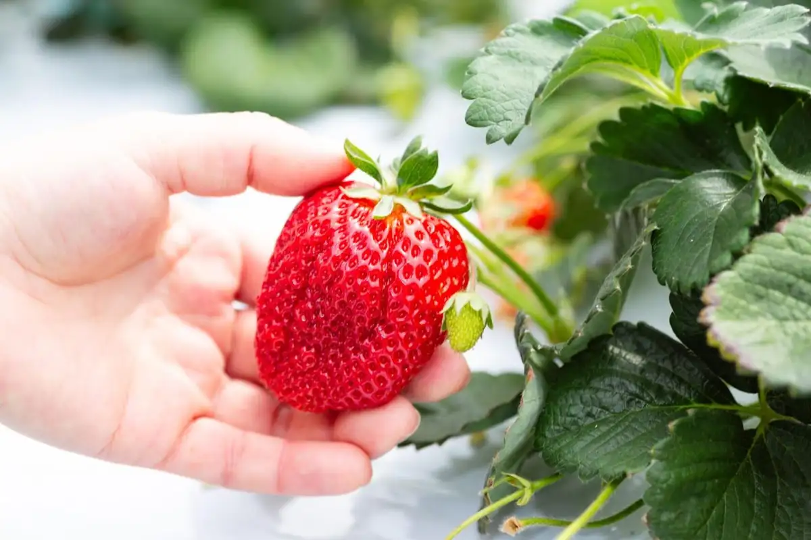
Dining
うどん豊前屋 官べえ
Udon Buzen Ya Kan Bee
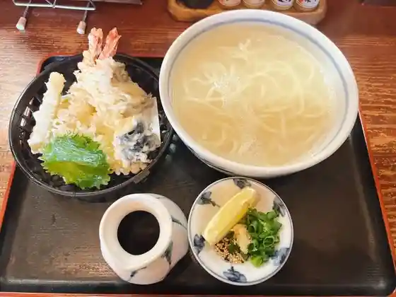
漁師食堂うのしま豊築丸
Ryoushi Shokudo Unoshima Yutaka Chiku Maru
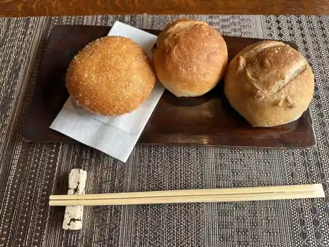
茶房 山帰来
Sabou Sankirai
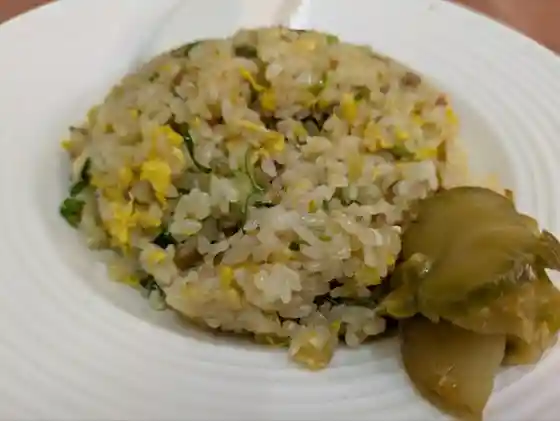
酒楽亭
Sakahogai Tei
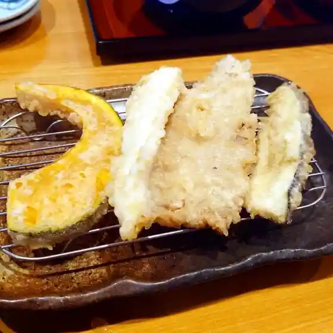
天ぷら 一修
Tenpura Ichi Osamu
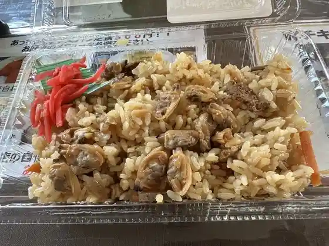
道の駅 豊前おこしかけ
Michi No Eki Buzen Okoshikake
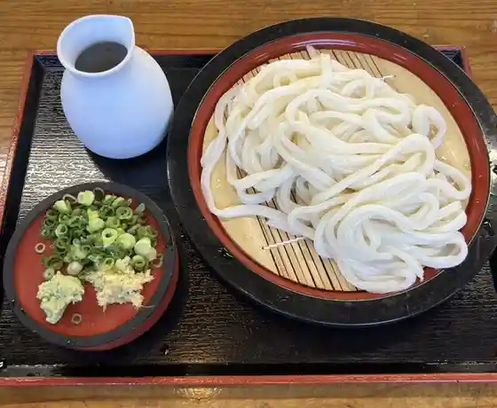
まるよし
Maruyoshi
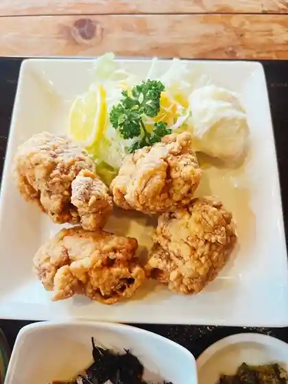
食事処 いま村
Shokuji Tokoro Ima Mura
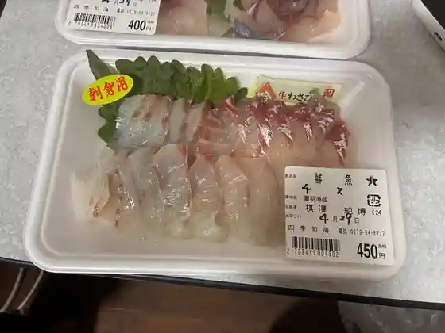
うみてらす豊前四季旬海
Umiterasu Buzen Shiki Jun Umi
やぶ
Yabu
手打の味 小泉 豊前店
Teuchi No Aji Koizumi Buzen Mise
六花茶屋
Rikka Chaya
豊前淡水 うなぎや
Buzen Tansui Unagiya
鮨処永しん
Sushi Tokoro Ei Shin
ラーメン 一晋 豊前店
Raamen Ichi Susumu Buzen Mise
屋台村 あっちゃん亭
Yatai Mura Atchan Tei
吟寿司
Gin Sushi
ケーキハウス四季
Keekihausu Shiki
シキノネ
Shikinone
スーパー細川 豊前店
Suupaa Hosokawa Buzen Mise
豊前厨房 バルバロッサ
Buzen Chuubou Barubarossa
食事処 鷹勝
Shokuji Tokoro Taka Kachi
浦野醤油醸造元
Urano Shouyu Jouzoumoto
パンヤヨナガ
Panyayonaga
ダイニング イチマルハチ
Dainingu Ichimaruhachi
カレー＆中華料理インド
Karee & Chuukaryouri Indo
平壌屋
Heijou Ya
鉄板ダイニング チオハウス
Teppan Dainingu Chiohausu
天狗
Tengu
パッション
Passhon
なじみ屋 支店
Najimi Ya Shiten
竹美ずし
Takemi Zushi
ぱんのこ
Pannoko
もみじかふぇ
Momijikafe
らんち屋
Ranchi Ya
中畑からあげ店
Nakahata Karaage Mise
グリーンフック ハンバーグ&プランツ
Guriinfukku Hanbaagu & Purantsu
豊前ハム工房
Buzen Hamu Koubou
ニブルス
Niburusu
麻以虎
Asa I Tora
おやつのムク
Oyatsuno Muku
すし鷹りん 鷹勝 豊前店
Sushi Taka Rin Taka Kachi Buzen Mise
うみ小屋
Umi Koya
日豊ラーメン
Nippou Raamen
冷泉茶屋
Reisen Chaya
希望食堂
Kibou Shokudo
笑福
Warai Fuku
農園カフェ Fan Fare
Fan Fare
ビッグ パン
Biggu Pan
唐揚ふんぷん亭
Karaage Funpun Tei
Sweets Cat
Sweets Cat
洋菓子工房 パレドール
Yougashi Koubou Paredooru
まるとら
Marutora
なじみや 本店
Najimiya Honten
黒のれん 豊前本店
Kuro Noren Buzen Honten
武蔵屋
Musashi Ya
天華一品
Tenka Ippin
かぼちゃキッチン
Kabocha Kitchin
とり蔵 豊前店
Tori Kura Buzen Mise
にこぱん
Nikopan
豊前からあげ 大翔
Buzen Karaage Hiroto
コージコーナー スエヒロ
Koojikoonaa Suehiro
福南食堂
Fuku Minami Shokudo
エムズ・カクテルバー
エムズ・カクテルバー
こうじ
Kouji
福岡県豊前市の居酒屋 中屋 なかや
Fukuokaken Buzen Shi No Izakaya Nakaya Nakaya
ぶんぶく茶屋
Bunbuku Chaya
ほっかほっか弁当 豊前
Hokkahokka Bentou Buzen
STAMP FURNITURE
STAMP FURNITURE
ル クール
Ru Kuuru
あんくるカレー 冷泉茶屋店
Ankuru Karee Reisen Chaya Mise
ひと花食堂
Hito Hana Shokudo
holoholo お散歩cafe
holoholo cafe
KITEN
KITEN
そらいろキッチン
Sorairo Kitchin
カフェ山処
Kafe Yama Tokoro
パーラーうさき
Paaraa Usaki
PADA
PADA
みやこハム 直売所
Miyako Hamu Chokubai Tokoro
7人のこびと
7 Nin Nokobito
からあげ いち丸
Karaage Ichi Maru
ジョイフル 宇島店
Joifuru U Shima Mise
神楽や
Kagura Ya
茶愛夢
Cha Manamu
こびとのパンや
Kobitono Pan Ya
ほっともっと 豊前バイパス店
Hottomotto Buzen Baipasu Mise
ひまわりキッチン
Himawari Kitchin
マルティーニ
Maruteiini
カフェド弘
Kafedo Hiroshi
ほっともっと 豊前店
Hottomotto Buzen Mise
洋菓子工房 チオハット
Yougashi Koubou Chiohatto
黒のれん ヨコヤマ三毛門店
Kuro Noren Yokoyama Mike Mon Mise
はなはんじょう
Hanahanjou
甘未茶屋 友
Kan Hitsuji Chaya Tomo
からあげピーコック
Karaage Piikokku
しあわせパン工房 正心庵
Shiawase Pan Koubou Seishin Iori
焼菓子工房ニコ
Yaki Kashi Koubou Niko
パンの店 スエヒロ
Pan No Mise Suehiro
富士菊
Fuji Kiku
ニューいずみ
Nyuu Izumi
割烹旅館 宇島汐湯
Kappou Ryokan U Shima Shio Yu
自由市場
Jiyuushijou
幸せおひさまカフェ
Shiawase Ohisama Kafe
一憩庵
Ichi Kei Iori
てんぐ
Tengu
これから屋
Korekara Ya
魚いち
Sakana Ichi
SPOON
SPOON
手仕事村やまぼうし
Teshigoto Mura Yamaboushi
おっちゃん
Otchan
渓月堂 豊前店
Kei Gatsu Dou Buzen Mise
いろは食肉店
Iroha Shokuniku Mise
LW
LW
MR Cafe
MR Cafe
Uターン
U Taan
ダイニングGG
Dainingu Gg
げん寿し
Gen Hisashi Shi
後藤酒造
Gotou Shuzou
アトリエ5533
5533
千石の唐揚げ 三毛門店
Sengoku No Karaage Mike Mon Mise
お好み焼やきはな
O Konomi Yaki Yakihana
お好み焼き あき
O Konomi Yaki Aki
ピッツァ ブルーム
Pittsua Buruumu
JA豊前ふれあい市場
Ja Buzen Fureai Shijou
豊前フルーツランド
Buzen Furuutsurando
やき鳥正ちゃん
Yaki Tori Sei Chan
チオサンド
Chiosando
どんどん本店
Dondon Honten
チオガーデン
Chiogaaden
道
Michi
デンスケ
Densuke
スナック Betty
Betty
かすが
Kasuga
あすか
Asuka
ゆば料理とスイーツのビュッフェ
Yuba Ryouri To Suiitsu No Byuffe
さぬきちゃや
Sanukichaya
一憩庵
Ichi Kei Iori
稲垣珈琲本舗
Inagaki Koohii Honpo
ダイニングバー ジョーカー
Dainingubaa Jookaa
スナック 苺
Sunakku Ichigo
美食工房 KICHEN LW
KICHEN LW
よかろう
Yokarou
だるま
Daruma
Udon Toyomae Kan Bee
Udon Toyomae Kan Bee
Unoshima Hochikumaru
Unoshima Hochikumaru
Koizumi Udon
Koizumi Udon
Rokka Jaya
Rokka Jaya
Isshu Udon
Isshu Udon
Nibbles
Nibbles
Taisho
Taisho
Chikuho Ramen Basaraka Buzen
Chikuho Ramen Basaraka Buzen
Joyfull
Joyfull
Izakaya Occhan
Izakaya Occhan
Higoro Syokudo
Higoro Syokudo
Curry Chinese Japanese Cuisine Indo
Curry Chinese Japanese Cuisine Indo
Cake House Shiki
Cake House Shiki
Sakura Karaage
Sakura Karaage
Passion
Passion
Joyfull
Joyfull
Shofuku
Shofuku
Kyushu Chikuho Ramen Yamagoya Buzen
Kyushu Chikuho Ramen Yamagoya Buzen
Hot Or Hot Or Lunch Buzen
Hot Or Hot Or Lunch Buzen
Kinchan Udon
Kinchan Udon
Yakiniku Restaurant Buzen Fruit Land
Yakiniku Restaurant Buzen Fruit Land
Kibo Shokudo
Kibo Shokudo
Fried Chicken Shop Chicken House Buzen
Fried Chicken Shop Chicken House Buzen
Position One by One San
Position One by One San
Sumibiyaki Koji
Sumibiyaki Koji
Naniwa Sushi
Naniwa Sushi
Tampopo
Tampopo
Isaribi
Isaribi
Gen Sushi
Gen Sushi
Chaaimu
Chaaimu
Sabo Sankirai
Sabo Sankirai
Bumbuku Chaya
Bumbuku Chaya
Shoan
Shoan
Taiwanese Restaurant Fukukogen
Taiwanese Restaurant Fukukogen
Chikujokan
Chikujokan
Trick
Trick
Green Grass
Green Grass
Fukunan Shokudo
Fukunan Shokudo
Pizza Maruthini
Pizza Maruthini
Maiko
Maiko
Satsuki Chaya
Satsuki Chaya
Hide
Hide
Otafuku
Otafuku
Teishaba
Teishaba
Hanamaru
Hanamaru
Stamina Kaizan
Stamina Kaizan
Kitchen Lou
Kitchen Lou
Keigetsudo Toyomae
Keigetsudo Toyomae
Horumonyaki Roasted House
Horumonyaki Roasted House
Onoya
Onoya
Oku Confectionery
Oku Confectionery
Toyonokuni Good Mon Square
Toyonokuni Good Mon Square
Tomohana
Tomohana
Hanaguruma
Hanaguruma
M s Cocktail Bar
M s Cocktail Bar
Brick
Brick
Shoan
Shoan
Stay
ＨＯＴＥＬ Ｒ９ Ｔｈｅ Ｙａｒｄ 豊前
HOTEL R9 The Yard
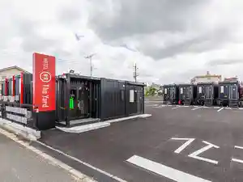
割烹旅館宇島汐湯
Kappou Ryokan U Shima Shio Yu
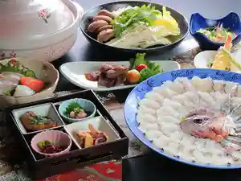
Sights
Buzen Furutsu Land
Oki Na Isu & Tsukue (Rinyuaru)
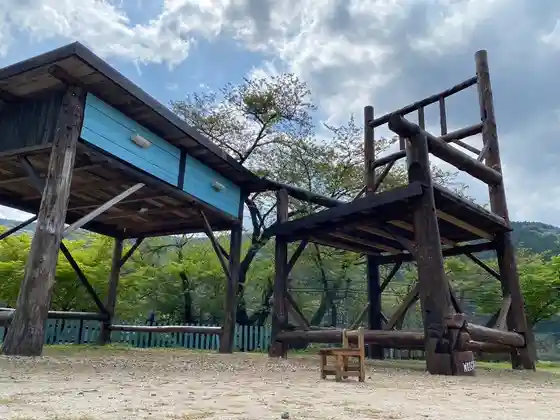
Kubote Taka Kachi Boku Sen no Sato
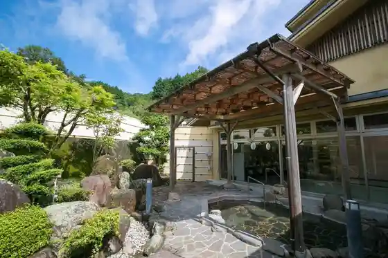
Buzen Onimen
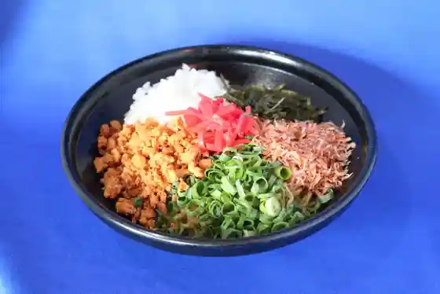
Buzen Umi Hitotsubu Kaki
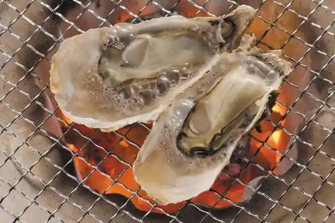
Buzen Hon Gani
Buzen Onsen Tengu Baths
Umiterasu Buzen
Roadside Station Buzen Okoshikake
Kubote Yama
Taifu Shrine
Kubote Museum
Buzen Umi Hitotsubu Kaki Yutaka Chiku Maru Betsumune (Umi Koya)
Iwa Cave
Buzen Fureai Market
Kuse Ninaru Zeppin Chinmi Hoshi Kinu Kai
Tenho Hall
U Shima Kaigan Shiohigari Ri